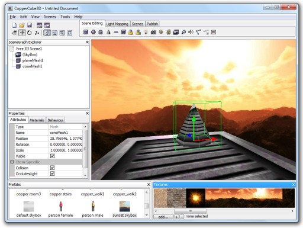

CopperLicht API Documentation
All tutorials
CopperLicht Tutorial: Hello World
This tutorial shows how to display a very simple interactive 3d scene using the 3d engine CopperLicht.
The final result of this tutorial will look about like this:
Things you'll need
Things you need for this tutorial are the following:- A text editor for editing HTML and JavaScript. You can use any editor, like Notepad, the editor in Windows. I can also recommend Notepad++.
- The CopperLicht SDK. Download it from the CopperLicht website if you haven't already.
- The 3D world editor for CopperLicht, CopperCube. Download and install it from the ambiera website, it is free.
Creating your 3d scene
To show a nice 3D scene in CopperLicht, we first need to create this scene. For this, we use the 3d editor CopperCube.Start up CopperCube and create a small 3d scene, just like you want. Maybe use a skybox, and some cubes or spheres, that should be enough for the beginning. Your scene might look like this afterwards:

Your first 3d scene created using CopperCube
Your first 3d scene created using CopperCube
Publishing the scene
To be able to load and show this 3d scene in CopperLicht, we need to export it to an .ccbjs or .ccbz file. CopperCube saves scenes to its own file format (.ccb) but is able to export these files for usage in CopperLicht as .ccbjs or .ccbz file:- Save you Coppercube document
- Publish the scene as WebGL: Choose Tools -> Test as JavaScript/WebGL
Writing CopperLicht code
Now that you published your 3D scene as CopperLicht/WebGL project using CopperCube, it is time to start writing your own code using the 3D engine. When it published your scene, CopperCube has created a .html file where you saved your .ccb file. Open this file, it should look like this:
<html>
<head>
<meta http-equiv="Content-Type" content="text/html; charset=iso-8859-1">
<script type="text/javascript" src="copperlichtdata/copperlicht.js"></script>
</head>
<body>
<div align="center">
<canvas id="3darea" width="640" height="480" style="background-color:#000000">
</canvas>
</div>
<script type="text/javascript">
<!--
startCopperLichtFromFile('3darea', 'copperlichtdata/coppercube.ccbz');
-->
</script>
</body>
</html>
Take a look at the startCopperLichtFromFile call in the JavaScript part. This is where the 3d engine is
created and told to load the .ccbj file. You can replace the second parameter in that call for example with
another file:
var engine = startCopperLichtFromFile('3darea', 'copperlichtdata/yourfile.ccbj')
// TODO: do something with the engine
The object stored in the engine variable in this code above is an instance of the CopperLicht class. Starting with this object,
you can manipulate everything in the 3d scene. But this should be explained more in detail
in the following tutorials.You can replace the copperLicht.js include with a possible newer 3D engine version if you prefer, by the way. Happy programming with CopperLicht.
More Tutorials
© 2011-2018 N.Gebhardt, Ambiera
Documentation generated by JsDoc Toolkit
Documentation generated by JsDoc Toolkit